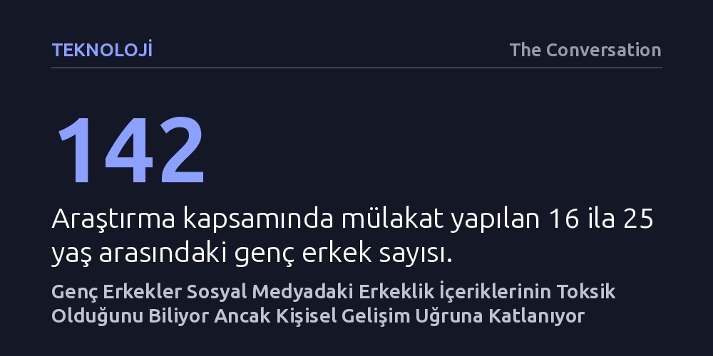

TEKNOLOJI · The Conversation · 2026-10-23
Üç ülkede 142 genç erkekle yapılan araştırma, katılımcıların sosyal medyadaki erkeklik içeriklerini kadın düşmanlığı için değil, disiplin ve özgüven arayışıyla tolere ettiğini ortaya koyuyor. Gençler bu içeriklerin zararlarını fark etseler de alternatif rehberlik bulamadıkları için bunlara katlanıyor.
Genç erkekleri toptan radikalleşmiş kadın düşmanları saymak yerine, kişisel gelişim ararken bu içeriklere maruz kalan ve doğru alternatiflerle kazanılabilecek geniş bir 'ikna edilebilir çoğunluk' olduğunu gösteriyor.

Sosyal medya algoritmaları genç erkeklerin karşısına sürekli olarak finansal başarı, fit bir vücut, disiplin ve sarsılmaz bir özgüven vadeden içerikler çıkarıyor. Kendini geliştirme ve refah vaadiyle sunulan bu paylaşımlar, ilk bakışta masum ve motive edici birer yaşam koçluğu tavsiyesi gibi görünüyor. Ne var ki bu parıltılı kabuğun altında çoğu zaman ulaşılamaz fiziksel standartlar, sağlığı hiçe sayan riskli davranışlar, katı cinsiyet rolleri ve şiddete varan aşırılıkçılığın en güçlü öncülü kabul edilen kadın düşmanlığı yatıyor.
Avustralya, Birleşik Krallık ve Amerika Birleşik Devletleri'nde 16 ila 25 yaş arasındaki 142 genç erkeğin katılımıyla yürütülen yeni bir araştırma, bu tartışmada genellikle sesi duyulmayan gençlerin bakış açısını mercek altına alıyor. Politika yapıcılar, eğitimciler ve ebeveynler dijital mecralardaki zehirli dilin yarattığı tehlikelere karşı önlem çağrısında bulunurken, doğrudan hedef kitle olan genç erkeklerin bu dünyayı nasıl yorumladığı gözden kaçıyordu. Araştırma, gençlerin sanıldığı gibi algoritmaların sunduğu her mesajı körü körüne yutmadığını, tam aksine bu içeriklerle çelişkili ve karmaşık bir ilişki kurduğunu ortaya koyuyor.
Görüşülen genç erkeklerin büyük çoğunluğu, doğrudan sorulmadığı halde internetteki erkeklik odaklı topluluklara ve Andrew Tate gibi figürlere atıfta bulunuyor. Gençlerin bu içeriklere yaklaşımı genel olarak pragmatik bir filtrelemeye dayanıyor. Birçoğu spor salonunda düzenli çalışma alışkanlığı edinmek, kariyer hedeflerine odaklanmak ve sosyal hayatta saygı görmek için ihtiyaç duyduğu motivasyonu başka hiçbir yerde bulamadığını ifade ediyor. Hayatlarında hissettikleri rehberlik boşluğunu bu mecralarla doldururken, verilen tavsiyelerin kendilerine sağladığı özgüveni değerli buluyorlar.
Ancak bu fayda arayışı, içeriklerdeki zehirli ideolojinin fark edilmediği anlamına gelmiyor. Katılımcılar, başarılı bir erkek olmanın yolunu kadınları aşağılamaktan geçtiğini öne süren aşırı sağ ve istemsiz bekâr (incel) söylemlerini net biçimde eleştiriyor. Buna rağmen özgüven ihtiyacı o kadar ağır basıyor ki, içerikteki zararlı yönleri görmezden gelerek sadece işlerine yarayan kısımları almaya çalışıyorlar. Bir katılımcının şu sözleri bu iç çatışmayı özetliyor: "Zehirli olduğunu biliyorum ama yöntemlerinin sağladığı özgüveni istemekten kendimi alamıyorum."
Araştırmanın en çarpıcı bulgularından biri, gençlerin radikalleşme ve çevrim içi zararlara açık hale gelmesinde yalnızca platform algoritmalarının değil, gençlerin kendi hayatlarından getirdikleri kırılganlıkların da belirleyici olması. Yaşın getirdiği deneyimsizlik, yalnızlık, zihinsel sağlık sorunları ve özellikle yaşanan ilk romantik reddedilmeler genç erkekleri bu tür söylemlere karşı savunmasız kılıyor. Ayrılık acısını veya özgüvensizliği spor salonunda ağırlık kaldırarak aşmaya çalışmak görünüşte olumlu bir adım olsa da, altta yatan duygusal yaralar çözülmediğinde bu motivasyon kolaylıkla kadınlara ve topluma yönelik bir öfkeye dönüşebiliyor.
Daha da önemlisi, zararı ve nefreti fark etmek her zaman o ortamdan uzaklaşmak anlamına gelmiyor. Genç erkekler, aradıkları kişisel gelişim ve disiplin desteğini kaybetmemek adına karşılaştıkları kadın düşmanlığını çoğu zaman hoş görüyor ya da sineye çekiyor. Bu durum, nefret söyleminin gençler arasında zamanla kanıksanmasına ve normalleşmesine yol açıyor. Dolayısıyla gençlerin pasif birer tüketici olmaktan çıkıp bu söylemlere aktif biçimde mesafe koyabilmesi için mevcut kabullenme eşiğinin kırılması gerekiyor.
Elde edilen veriler, internetteki aşırı uç ve fanatik toplulukların yanı sıra aslında çok daha geniş bir hareket ettirilebilir orta kesim bulunduğunu gösteriyor. Bu gruptaki gençler kadın düşmanlığına, aşırı riskli sağlık davranışlarına veya basmakalıp cinsiyet rollerine sempati duymuyor; yalnızca kendilerine amaç duygusu, disiplin ve sağlıklı bir aidiyet sağlayacak pozitif rol modelleri arıyor. Bu kitleyi peşinen radikalleşmiş ilan edip dışlamak yerine, eleştirel bakış açılarını güçlendirecek alternatif destek kanalları oluşturmak büyük bir değişim fırsatı barındırıyor.
Bireysel farkındalığın ötesinde, asıl sorumluluğun nefreti paraya çeviren sosyal medya platformlarında olduğu açıkça görülüyor. Avustralya'da gündeme gelen dijital özen yükümlülüğü yasası gibi yasal düzenlemeler, gençlerin bu toksik algoritmik akışlardan çıkabilmesine olanak tanımayı hedefliyor. Platformların hesap verebilir kılındığı ve cinsiyet eşitliğinin aslında erkeklerin de yararına olduğunu gösteren kapsayıcı anlatıların sunulduğu bir dijital ekosistem, gençlerin bu içeriklerin tuzağına düşmesini engellemenin en kalıcı yolu olarak öne çıkıyor.